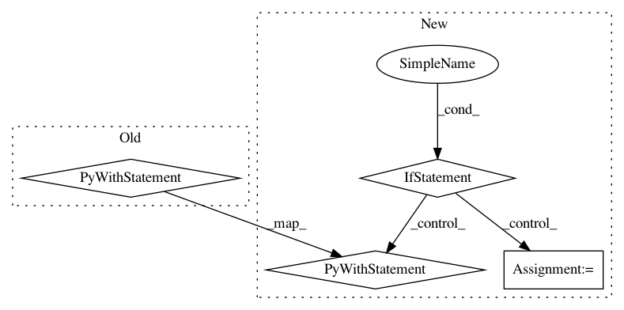

40220c28a320d5fe351b893e256db48deb864d09,coremltools/converters/mil/frontend/tensorflow/load.py,TF1Loader,_from_saved_model,#Any#,220
Before Change
)
graph_def = tf.compat.v1.GraphDef()
with open(output_graph, "rb") as f:
graph_def.ParseFromString(f.read())
graph_def = tf.compat.v1.graph_util.remove_training_nodes(graph_def)
with tf.Graph().as_default() as graph:
tf.graph_util.import_graph_def(graph_def, name="")
return graph.as_graph_def(add_shapes=True)
After Change
saved_model_tags=",".join(saved_model_tags),
)
if tf.__version__ < _StrictVersion("1.13.1"):
graph_def = tf.GraphDef()
with open(output_graph, "rb") as f:
graph_def.ParseFromString(f.read())
graph_def = tf.graph_util.remove_training_nodes(graph_def)
else:
graph_def = tf.compat.v1.GraphDef()
with open(output_graph, "rb") as f:
graph_def.ParseFromString(f.read())
graph_def = tf.compat.v1.graph_util.remove_training_nodes(graph_def)
with tf.Graph().as_default() as graph:
tf.graph_util.import_graph_def(graph_def, name="")
return graph.as_graph_def(add_shapes=True)
In pattern: SUPERPATTERN
Frequency: 3
Non-data size: 4
Instances
Project Name: apple/coremltools
Commit Name: 40220c28a320d5fe351b893e256db48deb864d09
Time: 2020-07-17
Author: aseem.elec@gmail.com
File Name: coremltools/converters/mil/frontend/tensorflow/load.py
Class Name: TF1Loader
Method Name: _from_saved_model
Project Name: rail-berkeley/softlearning
Commit Name: b1de9c72745b45cc312904b2d8f5a93fde7c8f2c
Time: 2018-05-23
Author: kristian.hartikainen@gmail.com
File Name: softlearning/algorithms/rl_algorithm.py
Class Name: RLAlgorithm
Method Name: _evaluate
Project Name: apple/coremltools
Commit Name: 40220c28a320d5fe351b893e256db48deb864d09
Time: 2020-07-17
Author: aseem.elec@gmail.com
File Name: coremltools/converters/mil/frontend/tensorflow/load.py
Class Name: TF1Loader
Method Name: _graph_def_from_model